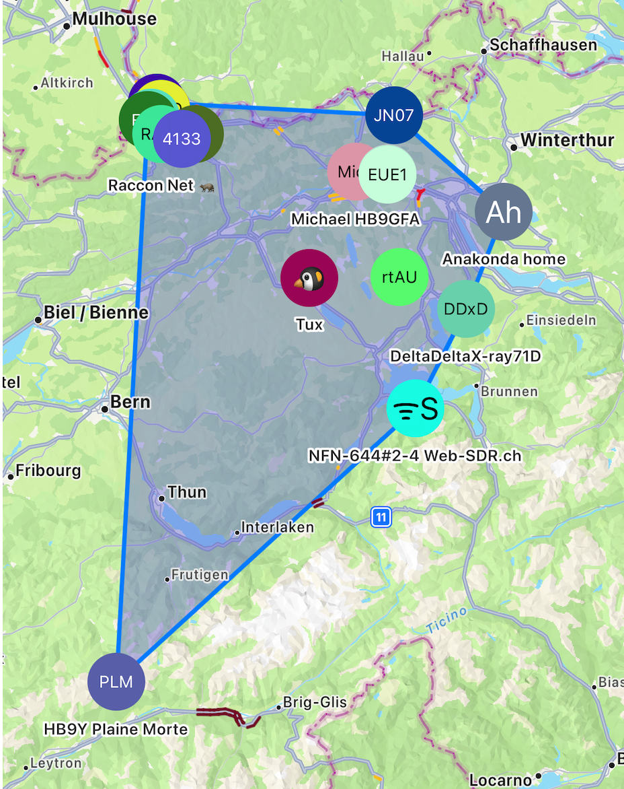

📡 About This Project
What started as a curiosity became a mission.
I initially began experimenting with Meshtastic to build a resilient, long-range LoRa communication network for my family. The idea was to have a communication fallback in case mobile towers went down — be it due to a power outage, natural disaster, or remote travel.
But the deeper I went, the more I discovered the beauty of decentralized mesh networks. No central authority. Just nodes, sharing data, broadcasting position, messages, and hope. It felt like a modern ham radio revolution — fully encrypted, low power, and open-source.
That’s when I decided to go bigger: I’ve started deploying permanent nodes across the Basel area — acting as repeaters, link extenders, and community enablers. My vision is simple: contribute to a resilient mesh backbone across Switzerland, one antenna at a time.
📍 Current Network Coverage
This map shows the actual repeater coverage of the Swiss Meshtastic Mesh Network. Some of these nodes — especially in Basel and surrounding regions — are ones I personally deployed or helped connect.
With connections stretching from Bern to Brig, from Zürich to Plaine Morte, this mesh is growing steadily — for hikers, off-grid enthusiasts, and anyone who believes in digital self-reliance.

🛰️ My Nodes
- EchoT – Overland unit with GPS, solar, and AES encryption
- Repeater01 – High balcony node, optimized for urban relaying
- BaseStation – Indoor hub node, always-on, connected via USB